Welcome to Envoir — you are sovereign now.
Here's the one idea that changes everything: your key is your identity. Every other inbox is an account a company issues you and can revoke — this one starts from a keypair you generate yourself, before any provider is involved. name@domain is just a memorable pointer to it, like a phone number pointing at a person. No provider holds the key, so no provider can read your mail, and you can move your whole life to another provider — or your own domain — without losing a single message or contact.
Mail, chat, files, and calendar all resolve to that one identity, held on a node you run instead of a company. It's the open-source reference client for DMTAP, designed to move through a peer mesh and mixnet so watching the wires never reveals who's talking to whom. What's real today, honestly, below ↓
Try scrolling — every folder in the list to the left opens the section it names, exactly the way a real folder would.
— Envoir
the crux why this isn't just another inbox
Every other inbox is a courtesy. This one starts from your key.
Four ideas do all the work. None of them are exotic on their own — the difference is that Envoir actually builds on them, instead of adding privacy as a layer on top of a rented mailbox.
Your key is your identity
Everywhere else, an account is something a company issues you and can revoke. Here the keypair comes first — you generate it before any provider is involved, and it's what every other name resolves to, not the other way round.
Your node is your provider
The address is a pointer to your key, not the key itself. Move to a different node, a different domain, even self-host tomorrow — the pointer gets republished and everyone still reaches the same you. Losing a provider was never supposed to mean losing an identity.
One object, every feature
Mail, chat, a shared file, a calendar invite — under the hood they're all the same sealed object (a MOTE), just rendered differently by the client. One identity, one mailbox, one set of devices, not a separate account and threat model per feature.
Useful with the mail you already have
Every DMTAP identity can also send and receive with ordinary SMTP inboxes through a gateway. You're not asking your contacts to migrate before you can use it — day one, it's already useful.
spec §3.9 · §0.4 your address
One key. One recommended address. Three layers of indirection between them.
The identity is always the key — that never casually changes. name@domain is the address you actually give people: human, and federated, so there's no single namespace to squat or fight over.
A message between two DMTAP identities never touches a mail server. It's built, sealed, and routed hop-by-hop by the sender's own node:
Both flavours are one format, reachable from Gmail and Outlook on day one, and survive key rotation and even a future post-quantum migration — the name binds to your identity's stable anchor, not to whichever key happens to be signing today (§1.5–§1.6, §3.9.1).
spec §2 · §5 · §8 · §13 the product
Mail, chat, files, and login — one key, no central provider
Everything below really is kind of the same object — a MOTE — rendered differently by the client. One identity, one mailbox, one set of devices, no separate service to trust per feature.
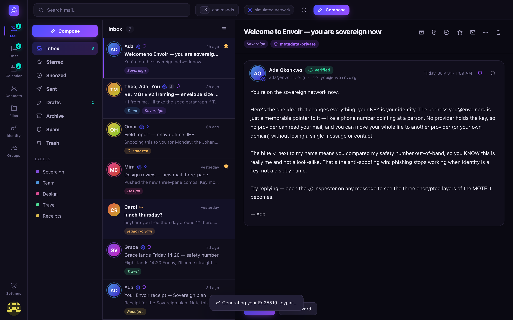
Rich compose, scheduled and undo send, color labels — over the same MOTE substrate as everything else, sealed end-to-end always; mixnet-routed once the mix workstream lands (today, delivery runs on the direct fast tier — see Honest status).
- Real client protocols: JMAP natively, plus a genuinely complete IMAP/POP3/SMTP-submission surface (CONDSTORE, SEARCHRES, SORT/THREAD…) so existing mail apps just work.
- A verified ✓ badge once you've checked a sender's safety number, and a plain legacy-origin marker on anything that crossed the gateway.
- Calendar and contacts ride the same node as JSCalendar/JSContact MOTEs, with CalDAV/CardDAV compatibility.
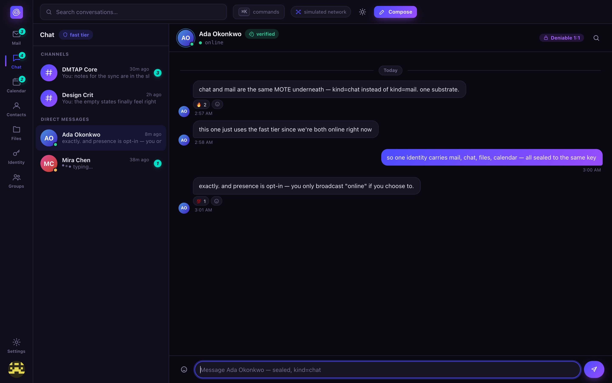
Chat
DMs and channels on the same substrate as mail — just a faster default tier. The two available cryptographic modes make genuinely different tradeoffs, so the client is explicit about which one's in use.
- MLS group · signed — the default for channels and any group of three or more; strong forward secrecy and post-compromise security, but non-repudiable by design (RFC 9420).
- Deniable 1:1 — an explicit, opt-in X3DH/PQXDH + Double Ratchet mode for conversations that need cryptographic repudiation; never a silent default.
- Presence and typing indicators are opt-in and off by default — metadata Envoir doesn't turn on unless you ask.
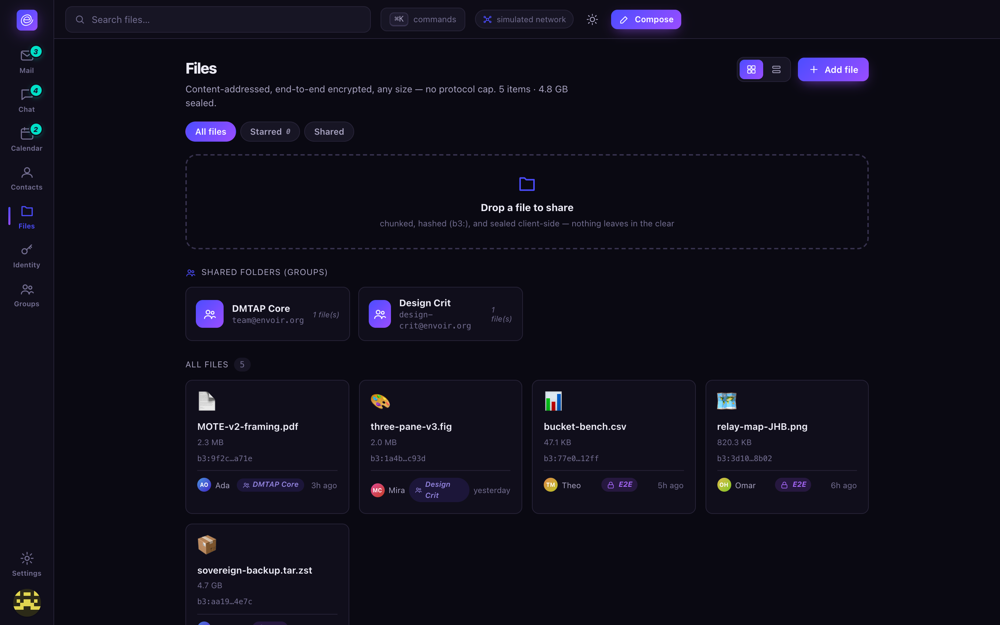
Files
A BLAKE3 Merkle-DAG manifest over encrypted chunks — resumable, deduplicated, swarmed BitTorrent-style, and self-verifying. Drop a file into a shared folder, and everyone with membership can read it.
- The file's key travels only inside the sealed MOTE that announces it — holders relay encrypted chunks blind, never able to read what they're serving.
- Small and normal attachments keep the full mixnet privacy guarantee; only very large bulk transfers trade some of that for bandwidth — disclosed, not hidden.
- Removing someone from a shared folder re-keys everything they had access to, by default.
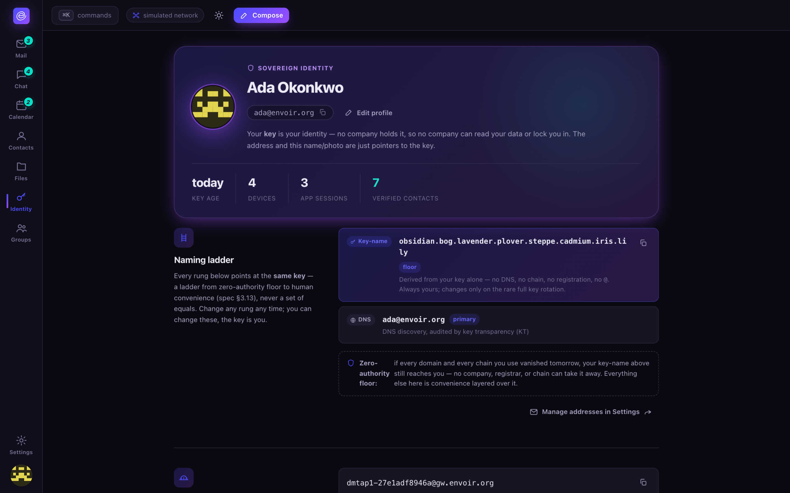
Identity
A safety number is a deterministic fingerprint of your whole keyset, rendered as words or a scannable grid so two people can verify each other's key out-of-band. The same keypair signs you into the web — no password, no central identity provider.
- Root key held cold; each device carries its own signed subkey, so compromising one device never hands over the root, and revoking it is cheap and targeted.
- Recovery is a first-class, versioned policy (phrase / devices / social guardians) with two deliberately asymmetric thresholds.
- DMTAP-Auth: an origin-bound challenge signed by your key — phishing-resistant like a passkey, because a passkey is what gates it.
more of the app the rest of the surface
Compose, calendar, contacts, groups, and settings
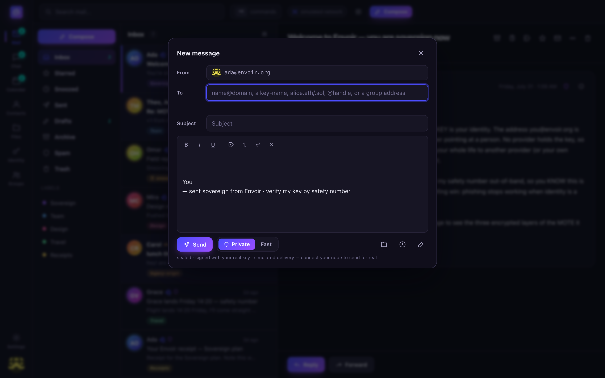
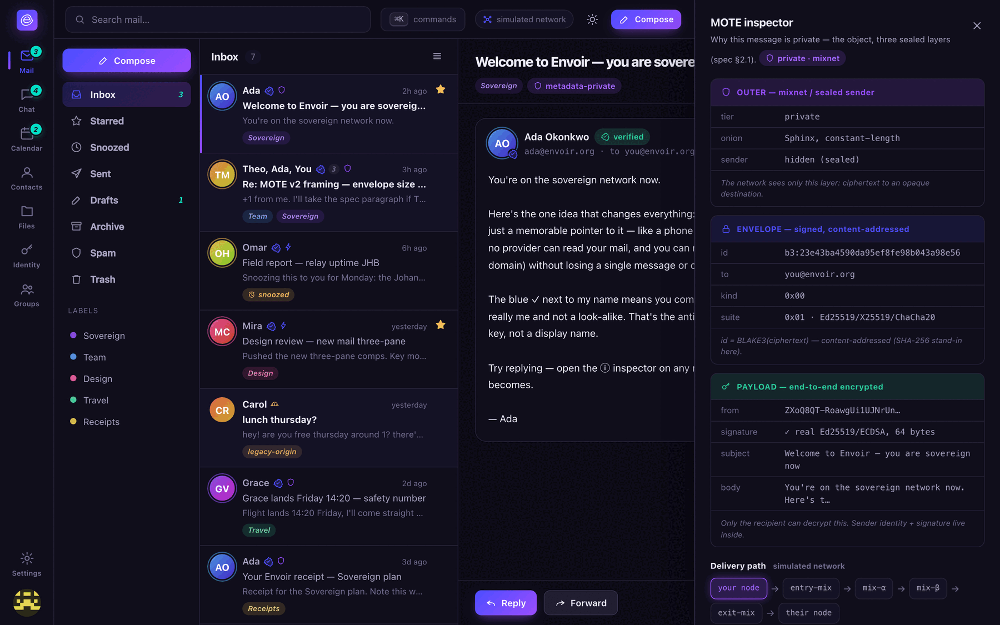
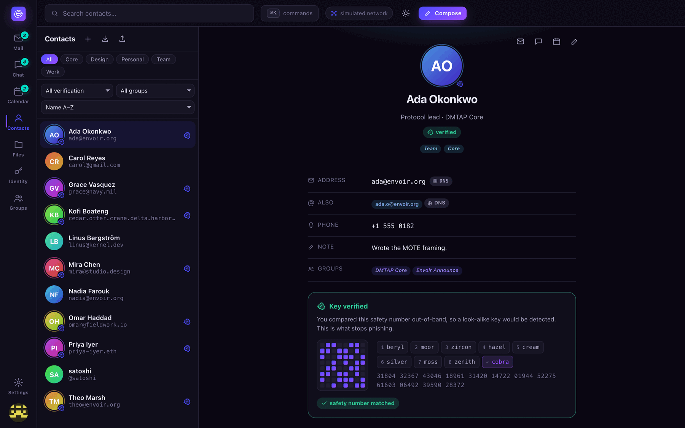
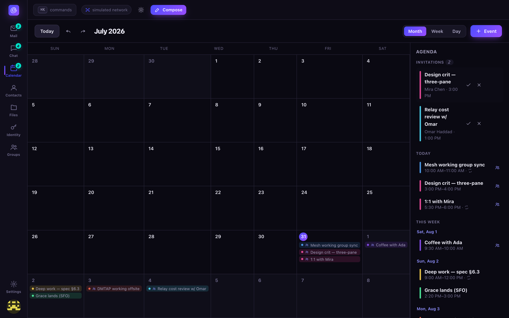
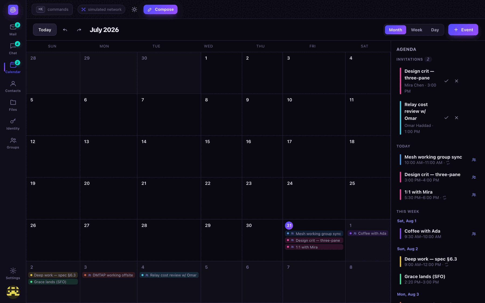
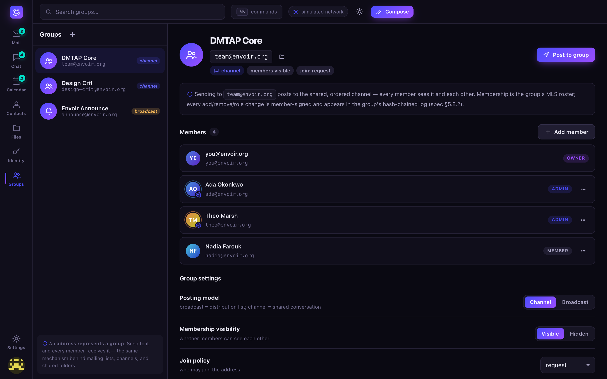
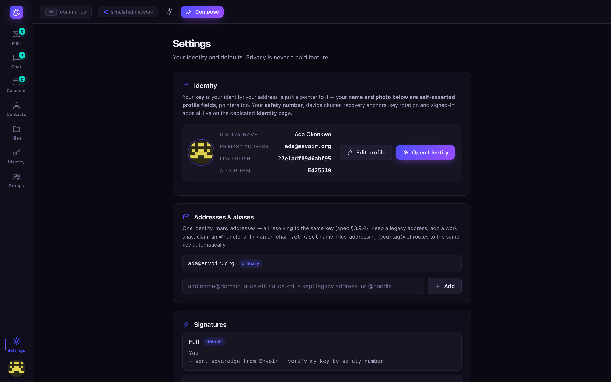
walkthrough how you'd actually use it
From nothing to a verified, sent message
Six real screens from the onboarding flow and the app itself — not a mockup of what it might look like eventually.
Generate a key
The client generates an Ed25519 keypair on your device and shows a recovery phrase once. Nothing is sent anywhere yet — there's no account to create, because the key is the account.
no server round-trip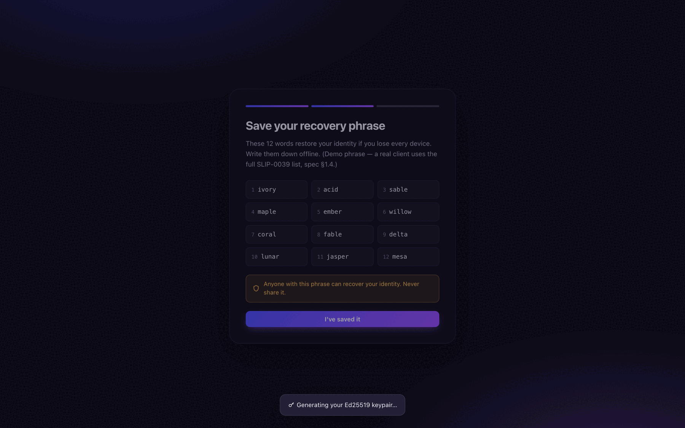
Claim your address
Pick a provider-issued handle or point your own domain at your key. The moment it's live, that's your safety number too — the same fingerprint two people compare to confirm they both pinned the real key.
key-name floor · zero authority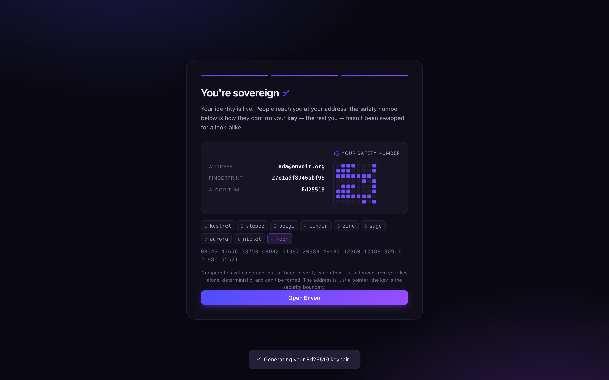
Add a contact, verify their safety number
Compare the word list or scan the grid with your contact, out-of-band — in person, on a call, wherever you already trust each other. That's the one gap first-contact pinning leaves open, and it's what closes it.
key verifiedCompose and send
Address it by name, key-name, ENS/SNS name, @handle, or a group address. Pick Private or Fast — the same tier choice you'll see again on every message you receive.
signed with your real keyWhat the recipient sees
A verified badge if they've already pinned your key, a legacy-origin label if it crossed a gateway, and — on any message — a transport-path panel showing exactly which trust boundaries it crossed.
legacy-origin, when it appliesSee exactly what happened
Open the inspector on any message for the full picture: what the network could see, what's signed, and what's sealed for your eyes only — the three layers, laid out instead of asserted.
private · mixnetspec §7 transport-path provenance
Know which trust boundaries a message crossed — without weakening the mixnet
Every message you receive carries a recipient-only, verifiable record of what it crossed on the way to you: which privacy tier, and whether it ever touched a legacy gateway. That record never leaves your own devices.
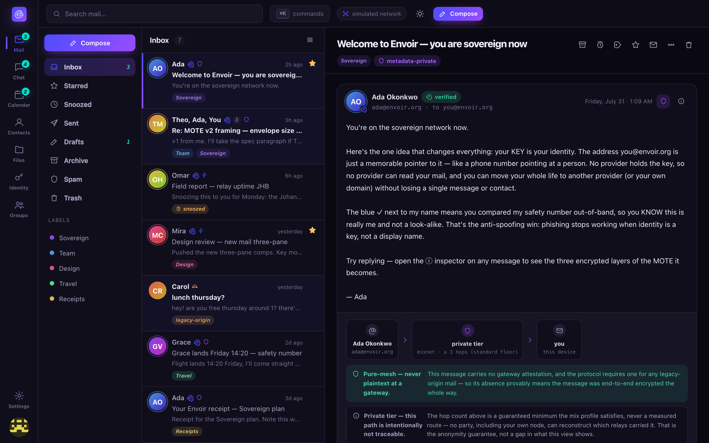
What you can learn about a message
- Which tier it arrived on — the metadata-private private tier (mixnet + cover traffic) or the faster, direct fast tier — something your own node observed at receipt, not a claim the sender made.
- Whether it's pure-mesh or gateway-touched. A gateway-touched message carries that gateway's cryptographic attestation, sealed inside the encrypted payload. A native message carries no such attestation — proof it was never plaintext at any gateway.
- A coarse hop-count floor for the private tier (≥3 hops standard, ≥5 high-security) — never an exact path.
What it deliberately withholds: no individual mix node, no exact hop count beyond the profile floor, no per-hop timing — a record that could reveal more would be leaking the exact thing the mixnet exists to hide. This is also the same attestation an operator would bill against, so a gateway charge is independently checkable, never taken on faith.
spec §17 · sense-check feature parity
Checked feature by feature against the email you use today
52 mail, contacts, and calendar features, audited one at a time against the legacy inbox. Where DMTAP genuinely loses a capability, this says so.
same or better
works, changed shape
legacy premise doesn't survive — correctly
disclosed, not hidden
Contact verification is the real upgrade
Legacy contacts are unauthenticated names. Here every contact is a key, audited by transparency logs and verifiable out-of-band — the one place parity wasn't the goal, improvement was.
Search stays on your device
No provider ever builds a searchable index of your mail. Your always-on node indexes everything locally — the same capability as a server, just held by you instead of them.
What's still open
Full-fidelity encrypted export/backup and a zero-setup org directory aren't fully specified yet — real gaps, tracked in the open spec rather than glossed over.
spec §6 privacy, honestly
Metadata-private by architecture, not by promise
Content privacy is table stakes. DMTAP also treats the social graph itself — who talks to whom, when, how much — as something to protect.
-
Sealed sender
Intermediaries relay a MOTE without ever learning who sent it.
-
Mixnet + cover traffic
Onion-routed hops, mixing delays, and padding hide timing and size — email's tolerance for latency is what makes this affordable.
-
Push, not poll
Your always-on node receives through the mixnet — there's no store-and-poll step for an observer to time.
-
Private lookups
Name→key resolution is routed through the mixnet too, so the directory never learns who's asking about whom.
honest boundary · §6.6
DMTAP targets a global passive adversary — one that can watch traffic everywhere, but not inject, drop, or delay it at will.
- A global active adversary with unlimited resources can still degrade anonymity — cover traffic and mixing approach a perfect defense asymptotically, never for free.
- Large-file bulk transfer trades some of that protection for speed (the fast/onion tier, not the full mixnet) — a disclosed tradeoff, not a hidden one.
- A seized or keylogged device exposes its whole synced mailbox, not a slice — mitigated by at-rest encryption and recovery, not eliminated.
- v0 key transparency is tamper-evident, not yet equivocation-proof across multiple logs — a real, stated tension while KT gossip matures.
- Today, only the fast tier actually runs end-to-end.
node/src/onion.rs's Sphinx onion-wrap is a structural, keyed-BLAKE3 stand-in for the real mix cryptography (X25519/ChaCha20-Poly1305/LIONESS) — it models the cell layout and replay-freshness contract, not live mix crypto, and no mix network is deployed. The private tier above is this project's design target, tracked as the top roadmap item, not something delivered yet.
The protocol is specified so that private (full mixnet, minutes) is the eventual default and fast (direct, seconds) is the disclosed-cost opt-in; until the mixnet workstream above lands, every message actually ships on the fast tier. Honest, disclosed limits beat a marketing promise of "perfectly anonymous."
spec §12 operators
Free to self-host, forever. Paid is optional — for not running it yourself.
Envoir is MIT-licensed end to end: protocol, node, gateway, and client. Nothing that matters is held back for a paid tier.
Self-host
$0 · your hardware- Run the node on a Pi, NAS, old laptop, or $2 VPS
- Full protocol surface: mesh, mail/chat/files, MLS, DMTAP-Auth — nothing gated (the mixnet is a design target, not yet real — see Honest status)
- Unlimited by default — the operator seam's self-host implementation is a no-op
- MIT license, auditable top to bottom
Hosted operator
optional · none run today- Someone else runs the always-on node for you
- Billing, quotas, and multi-tenant management
- Same protocol, same client, same privacy guarantees
- Never a crippled feature set — the paid thing is only running it
Both modes are the same code, talking through one documented contract — the dmtap-seam: metering, provisioning, policy, and gateway authorization. Self-host gets the unlimited defaults; a hosted operator implements the same seam without forking or gating the protocol.
what operators see the seam has two consoles
Domain admin, and fleet operator — neither one reads your mail
The org console administers names under a domain, never a sovereign member's key. The fleet superadmin view is explicitly content-blind — health and metering, never message content.
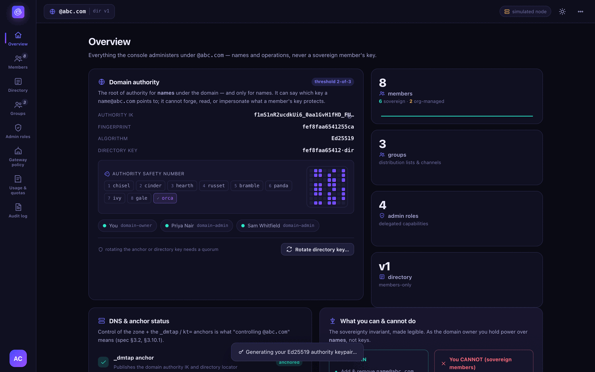
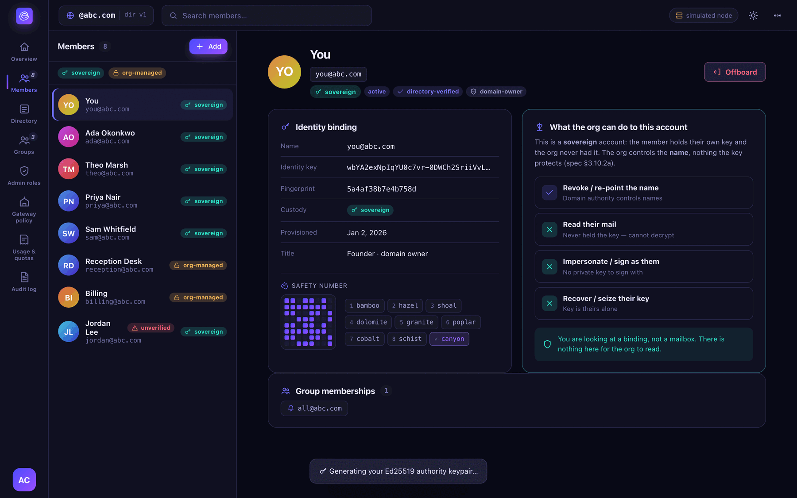
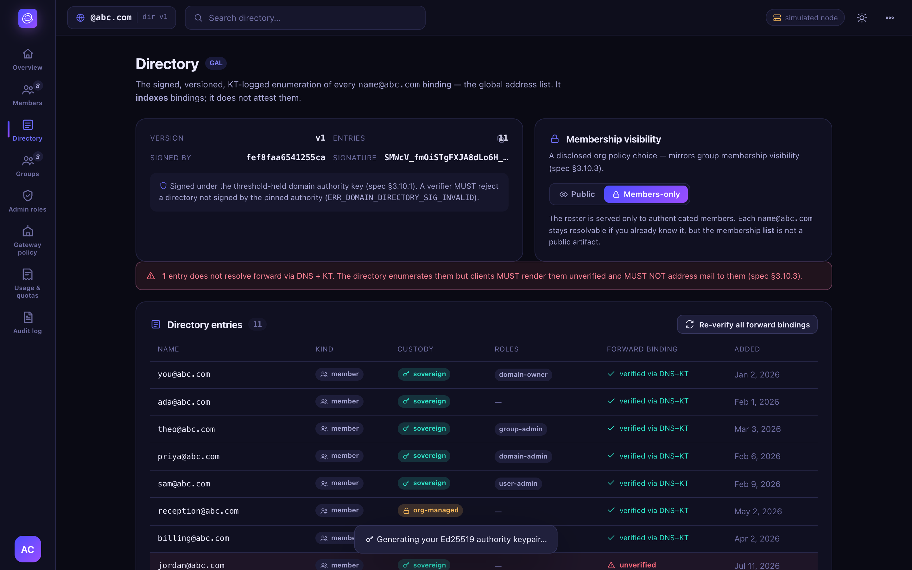
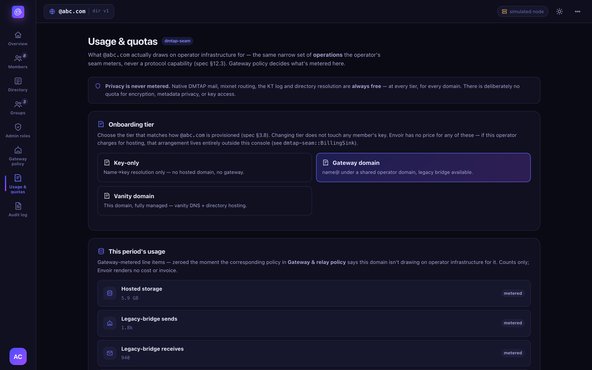
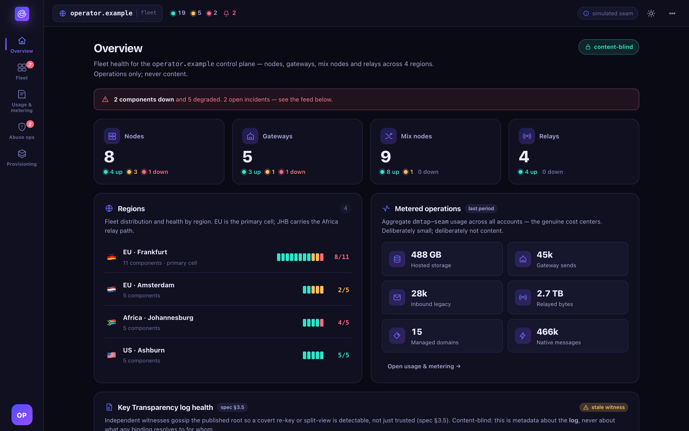
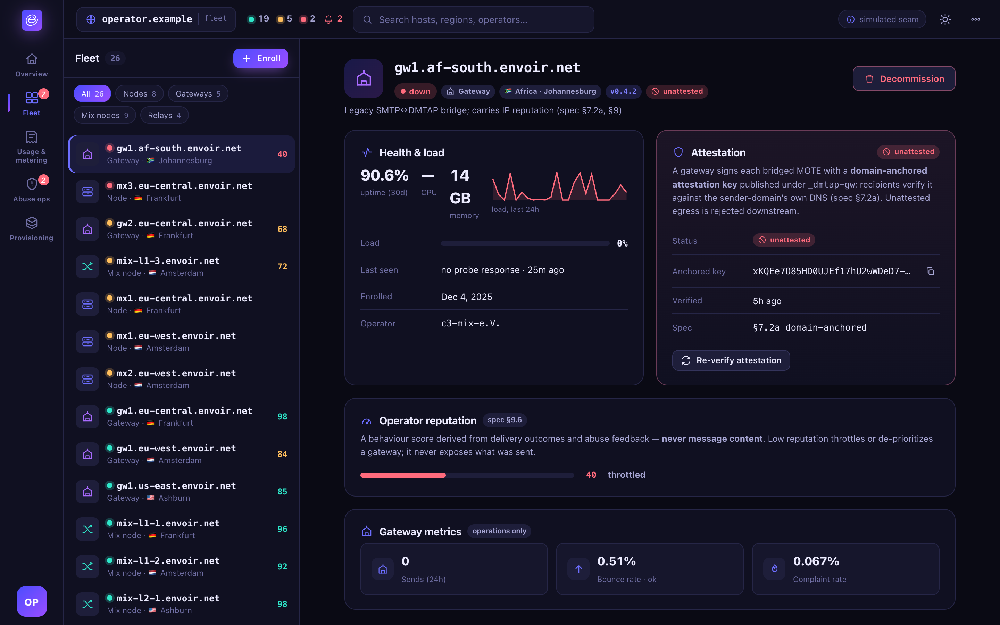
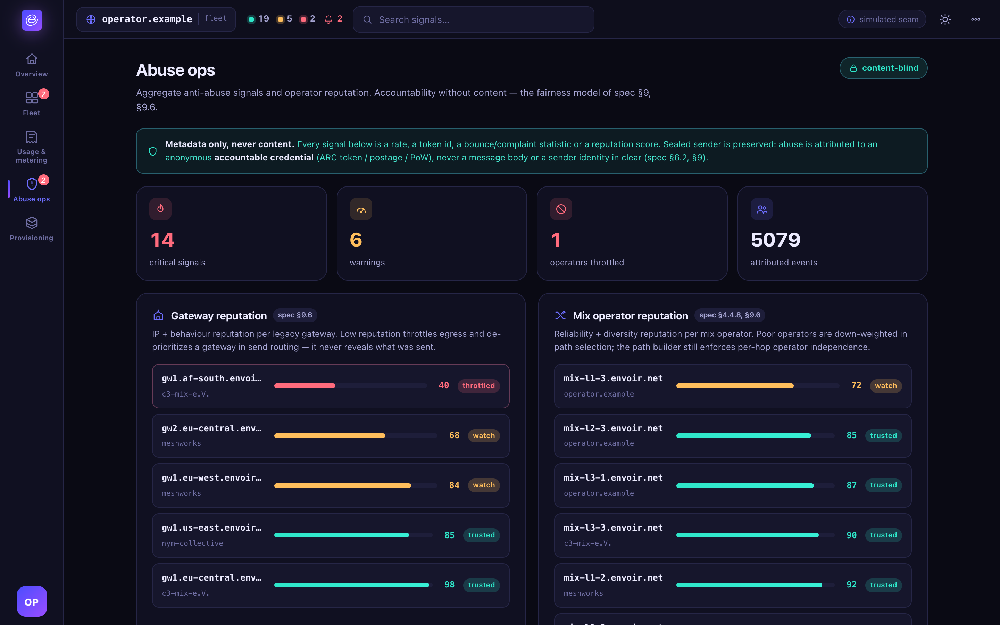
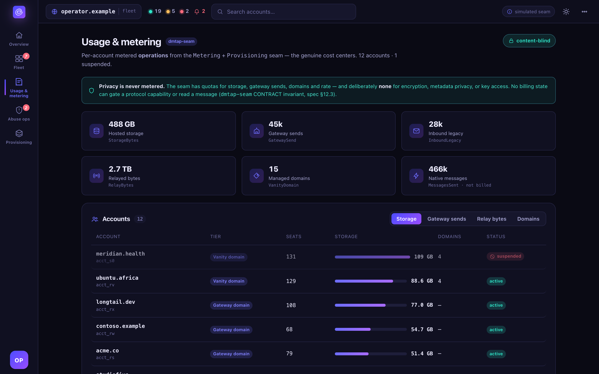
spec §0.5 where state lives
Your key, not our servers
The middle of the network — mesh, mixnet, gateway — is built to hold no durable user data at all. Durability always lives at an edge you control.
| State | Lives on | Notes |
|---|---|---|
| Keys, mailbox, files, retry queue | your node | All durable state — the edge, not the middle |
| Name → key | DNS + key transparency | Stable; small; auditable for silent key swaps |
| Key → location | mesh DHT | Dynamic, signed, TTL'd, self-republished |
| In-flight ciphertext | mixnet / relay | Held only until delivered — content-blind |
| Legacy reputation | gateway | The one real operational cost, if you bridge legacy mail |
start here
Run your own front door.
Two pieces of software, plus DNS you already have. The node holds the mailbox; the gateway is optional and only needed if you correspond with the legacy world.